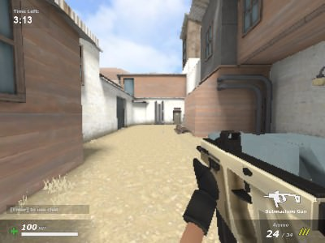

Es un juego perfecto para jugar con un amigo y perder el tiempo. Puedes iniciar sesión y guardar progreso, además de que aprendes a jugar un juego de competencia deportiva. Si eres una persona casual, sirve perfectamente. Probablemente seas de los que acaba rápido el trabajo o actividad, entonces podrás disfrutar este juego. Chess.com/es

DeadShot.io es un juego de disparos multijugador en línea (FPS) gratuito que se ejecuta directamente en el navegador. Destaca por su acción rápida, partidas dinámicas y una estética minimalista tipo low-poly que permite buen rendimiento incluso en PCs escolares con recursos limitados. 🎯 Lo bueno: Accesibilidad inmediata: No necesitas instalar nada. Solo abre el navegador, escribe tu nombre y entra en la partida. Multijugador competitivo: Puedes enfrentarte a jugadores reales de todo el mundo en tiempo real. Variedad de armas: Desde rifles de francotirador hasta escopetas, cada arma tiene su estilo y dificultad. Personalización: Puedes elegir tu nombre, apariencia y controlar aspectos del HUD. Ideal para partidas rápidas: Perfecto para jugar 10-15 minutos si ya terminaste tus actividades (o si el profesor se distrajo 👀
← Volver al inicio